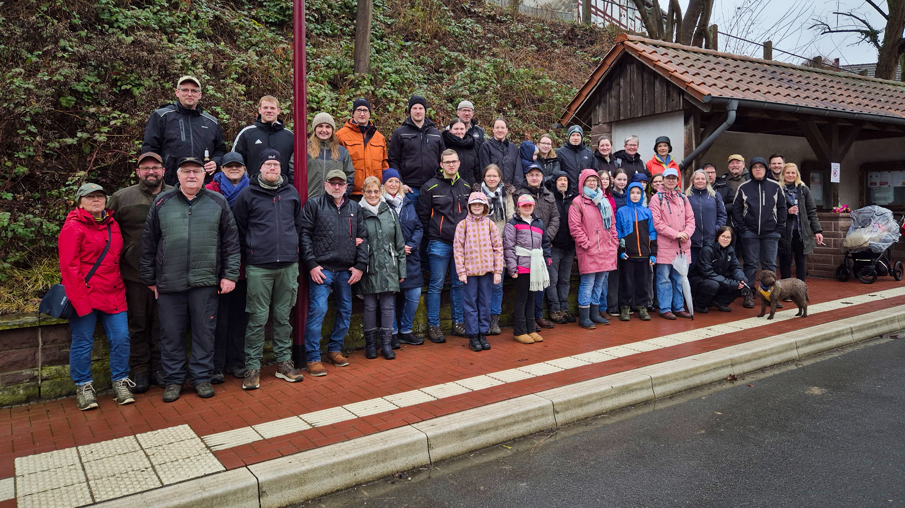
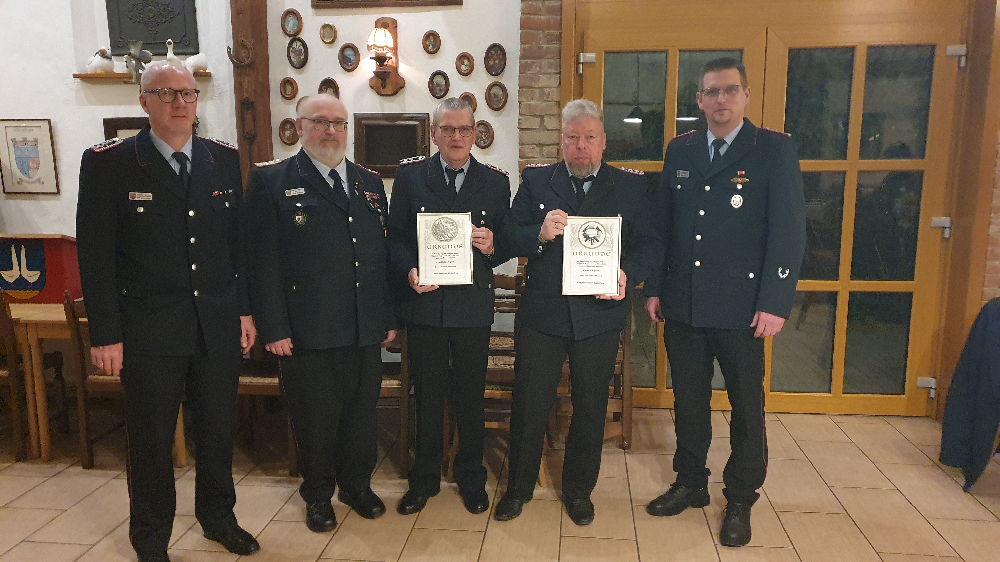

Aktuelles & Termine
Termine 2026
- 06. März 2026 – Knobeln der Aktiven
- 30. Mai 2026 – Feuerwehrwettkämpfe
- 14. November 2026 – Preisskat und Knobeln
- 29. November 2026 – Adventsfeier
Termine 2027
- 09. Januar 2027 – Jahreshauptversammlung Feuerwehr
Grünkohlwanderung 2026
Gemeinschaft trotz Regen: Feuerwehr Reileifzen trotzt dem Wetter
Zur traditionellen Grünkohlwanderung der Feuerwehr Reileifzen fanden sich in diesem Jahr insgesamt 57 Personen zusammen.
Jung und alt folgten der Einladung und ließen sich auch vom regnerischen Wetter nicht die gute Laune verderben.
Die Veranstaltung zeigte einmal mehr, wie stark der Zusammenhalt innerhalb der Wehr und der Dorfgemeinschaft ist.
Wanderung durch Feld und Flur
Ca. 40 Wanderer machten sich gut gelaunt auf den Weg von Reileifzen über Lütgenade nach Golmbach.
Trotz grauer Wolken und immer wieder einsetzendem Regen blieb die Stimmung ausgelassen.
Unterwegs sorgten kleine Pausen und nette Gespräche für beste Unterhaltung, sodass die Strecke wie im Flug verging.
Ziel erreicht: Einkehr in Golmbach
Im Gasthaus „Zur Hünenburg“ angekommen, wurden die Teilnehmer herzlich empfangen.
Dort wartete ein deftiges Grünkohlessen, das nach der Wanderung besonders gut schmeckte.
In geselliger Runde ließ man den Tag gemütlich ausklingen und tauschte Erinnerungen sowie Anekdoten aus.
Ein gelungener Jahresauftakt
Die Grünkohlwanderung war erneut ein voller Erfolg und unterstrich die Bedeutung gemeinsamer Aktivitäten abseits des Einsatzgeschehens.
Ob jung oder alt – alle waren sich einig: Diese Tradition soll auch im kommenden Jahr fortgeführt werden.

Jahreshauptversammlung 2025
150 Jahre Leidenschaft: Feuerwehr Reileifzen blickt auf ein historisches Jubiläumsjahr zurück
Zur Jahreshauptversammlung der Feuerwehr Reileifzen in der „Gänsetränke“ konnte Ortsbrandmeister Marco Eikhoff zahlreiche Aktive und Ehrenmitglieder begrüßen. Im Mittelpunkt stand ein Rückblick auf ein außergewöhnliches Jahr 2025, das ganz im Zeichen des 150-jährigen Bestehens unserer Wehr stand.
Ein Sommerfest der Superlative
Das dreitägige Zeltfest an der Weser im Juni bildete den emotionalen Höhepunkt des Jahres. Bei hochsommerlichen Temperaturen wurde die Reileifzer Zeltfesttradition eindrucksvoll wiederbelebt und ein gelungenes Fest auf die Beine gestellt. Marco Eikhoff dankte allen Helfern, Sponsoren und Besuchern, die zum Erfolg beigetragen haben.
Einsatzgeschehen und Jugendarbeit
Neben den Feierlichkeiten forderte der Ernstfall die Wehr bei drei Brandeinsätzen sowie einer technischen Hilfeleistung. Auch die Jugendfeuerwehr blickte auf ein erfolgreiches Jahr zurück: Sebastian Pietsch berichtete vom 25-jährigen Jubiläum der Jugendfeuerwehr Lütgenade, bei dem in Reileifzen die Jugendflammen 1 und 2 erfolgreich abgenommen wurden.
Ehrungen für treue Dienste
Gemeindebrandmeister Dirk Siefarth verlieh Karsten Rößler das Niedersächsische Feuerwehr-Ehrenzeichen für 40 Jahre aktiven Dienst. Für stolze 60 Jahre Mitgliedschaft wurde Friedhelm Rößler geehrt. Zudem erhielten Ulrich Kriegel, Carsten Nickel und Christian Tacke (in Abwesenheit) Auszeichnungen für 25 Jahre Treue.
Ausblick auf 2026
Das nächste Highlight steht bereits fest: Am 30.05.2026 veranstaltet die Feuerwehr Reileifzen Wettbewerbe anlässlich des 40-jährigen Bestehens der Frauengruppe.
